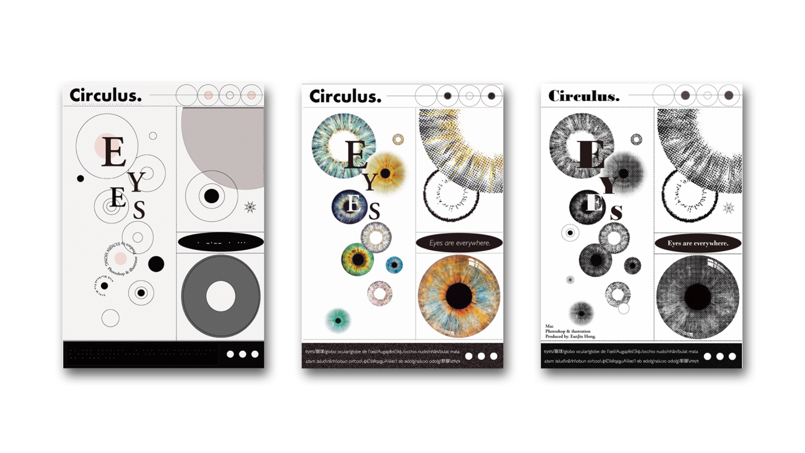
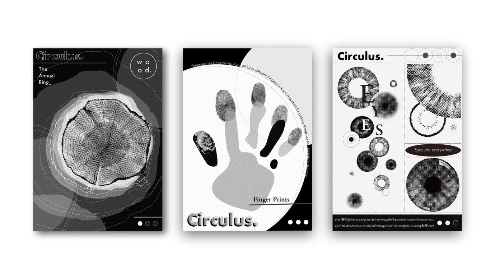
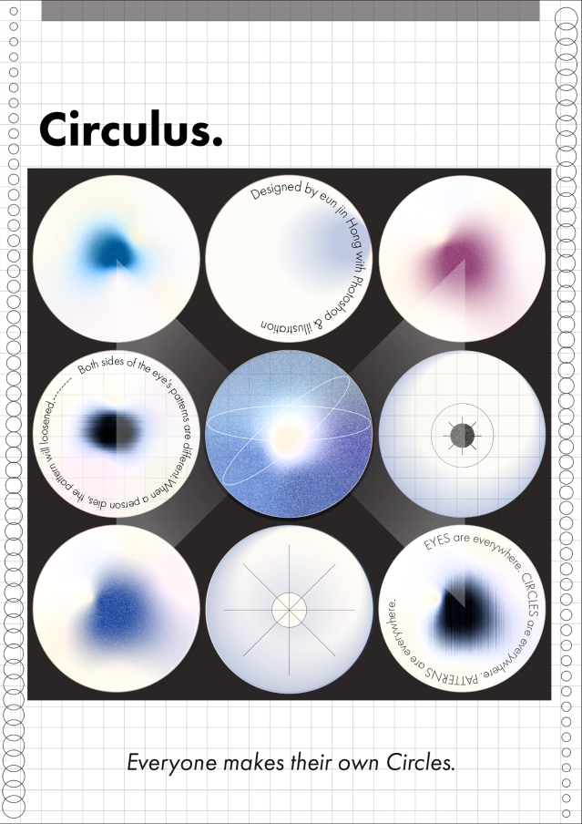

Project
Contact
@hong_work.ing
Designer
Shape Research
홍은진
CIRCULUS
Category
Shape Poster1 / Shape Poster2 / Shape Poster3
원 모양을 가진 주변의 사물을 찾아 쉐입 포스터를 제작하였다.
SHAPE POSTER1
SHAPE POSTER2
SHAPE POSTER3
Poster
Poster
Poster
기본 도형인 원이 중첩되어 배열을 만들어내는 세 가지 원들인 나이테, 홍채, 지문을 주제로 한 포스터.
각각의 원들은 그 개체의 정체성을 보여준다.
홍채를 주제로 한 포스터를 선택하여 [문자를 점자로/흑백을 컬러로/폰트를 볼드하게]
변형하였다.
오늘날 홍채는 마치 휴대폰의 잠금 패턴처럼 보안을 위한 훌륭한 잠금장치로 사용된다.
때때로 누군가는 마치 옷을 갈아입듯 콘텍트 렌즈를 착용해 자신의 홍채에 새로운 색깔과 패턴을 입히기도 한다.


